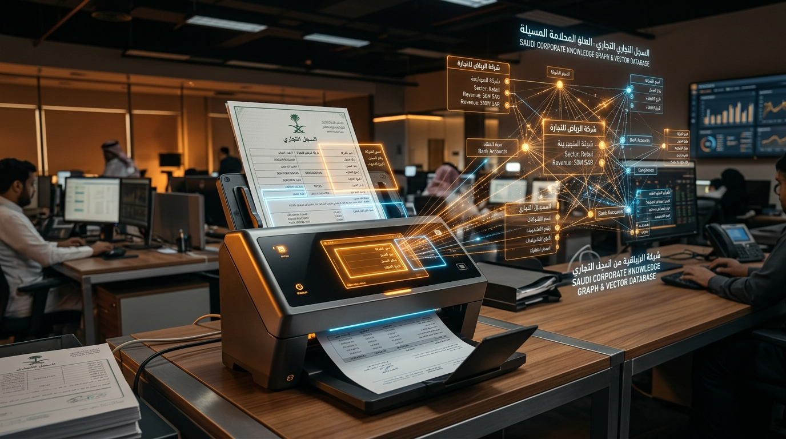
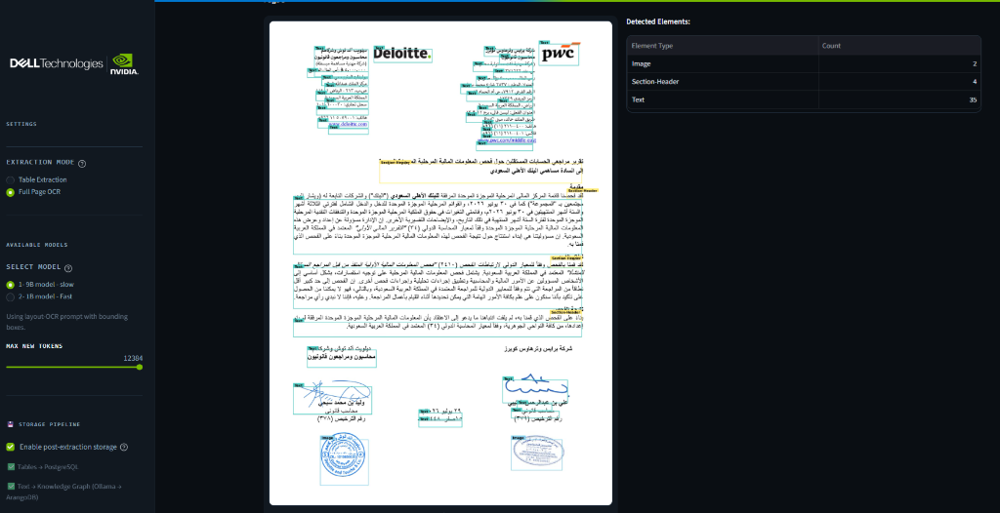
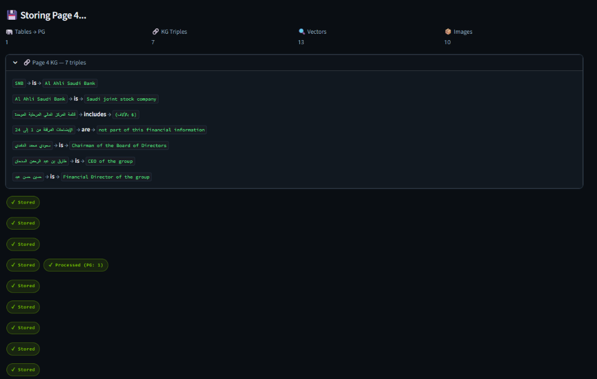

Arabic documents into structured data
KYC files, trade-finance paperwork and corporate account packs arrive as scans — often in Arabic, often as complex nested tables no legacy OCR can parse. This pipeline turns them into queryable records, a knowledge graph, and a vector index, without a single byte leaving the premises.

Most of the cost in corporate onboarding, KYC, and trade finance is not decisioning — it is getting the unstructured paperwork into operational systems. A commercial register (سجل تجاري), a tax card, a balance sheet: each has its own bespoke layout, and the mission-critical content is locked in tables.
Arabic introduces compounding difficulty: right-to-left cursive script, complex ligatures, non-standard font encoding, and table structures that generic Western OCR engines flatten into meaningless continuous character strings. It is also the reason most global vendor stacks fail in Middle East deployments.
Layout segmentation
The incoming scan is visually segmented into semantic bounding regions — tables, paragraphs, headers, and seals — before OCR occurs, preserving physical structural context.
Table geometry preservation
Arabic tabular structures are extracted with rows, columns, and spanning cells intact, avoiding the classic failure mode where multi-column financial statements are collapsed into a continuous stream.
Parallel ingestion
Tables stream to PostgreSQL, relationships to ArangoDB knowledge graph, text embeddings to Qdrant, and original raw scan artifacts to S3-compatible MinIO storage.
Unified multi-modal querying
Analysts query structured numbers via SQL, search Arabic legal terms with vector similarity, and traverse ownership networks with graph traversals.
Visual Element Detection & Native Arabic OCR
Upload multi-page financial statements, tax cards, or commercial registers. The pipeline visually segments the page geometry before extracting text, isolating images, section headers, text blocks, and stamped corporate credentials.
The model accurately isolates 35 Text blocks, 4 Section-Headers, and 2 Corporate Seals/Signatures without character fragmentation or right-to-left reversal.

Automated Entity Triples & Knowledge Graph Ingestion
Extracted information does not sit in flat text files. The pipeline automatically decomposes unstructured Arabic prose into structured Knowledge Graph triples, relational tables, and vector embeddings in real time.
During Page 4 processing: 7 Knowledge Graph triples (mapping corporate leadership: Board Chairman, Group CEO, Financial Director), 1 Relational Table, 13 Semantic Vectors, and 10 Image crops streamed simultaneously.

A single document answers questions about itself. A knowledge graph answers questions across documents — detecting that the same beneficial owner (UBO) appears in three unrelated shell company applications, or that two firms sharing no legal affiliation list the same physical warehouse address in Dammam.
اسم الشركة السجل التجاري 101012345 القيمة 250,000
One continuous text string. Table geometry is lost, and numbers cannot be tied reliably back to column headers.
A structured relational entity with typed schema, validated VAT/CR digits, and graph relationships linked to existing enterprise databases.
Why is Arabic document intelligence notoriously difficult?
Arabic is written right-to-left in cursive script where letter glyphs change shape depending on whether they sit at the beginning, middle, or end of a word. When printed documents are scanned at varying angles, OCR engines trained on Latin alphabets frequently misclassify connected characters, fragment words across table cell borders, and reverse numbers.
Our pipeline separates physical bounding-box geometry from text decoding, guaranteeing that right-to-left reading order and table cell coordinates are locked in before OCR inference begins.
This is an enterprise document-understanding pipeline, not magic. Poor scans, extreme skew, and heavy handwriting degrade accuracy. In production, confidence scores route low-certainty extractions to human-in-the-loop review queues.